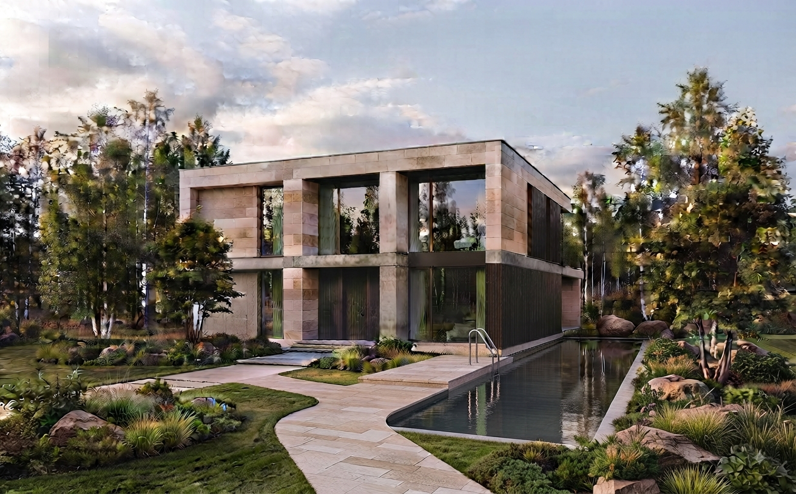
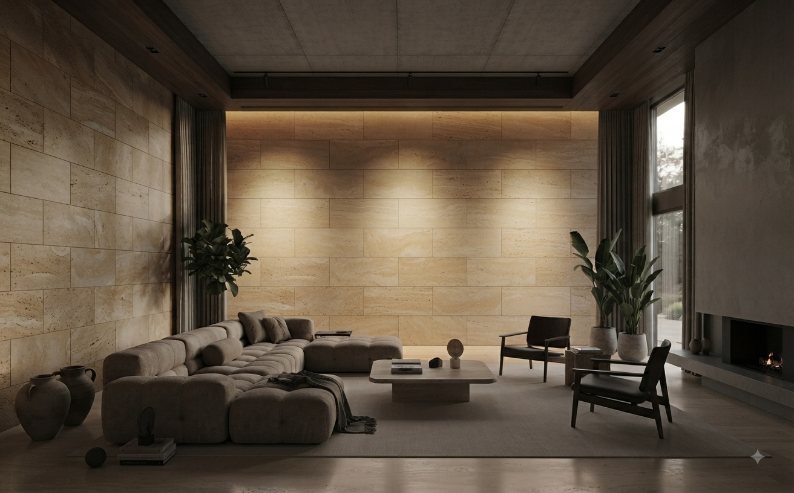
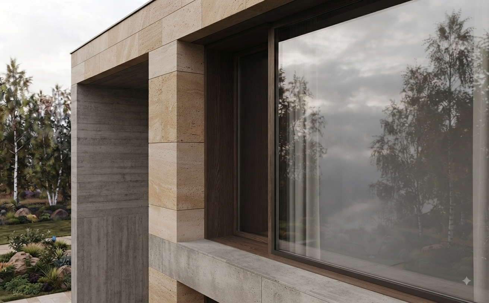
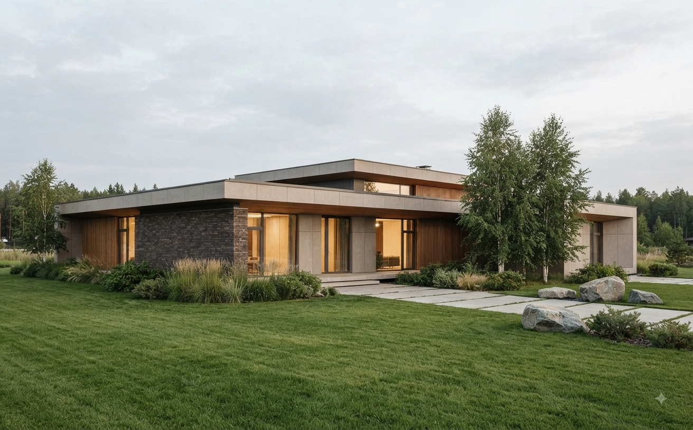
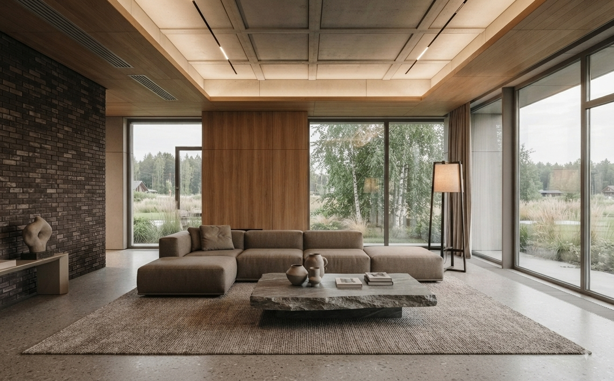
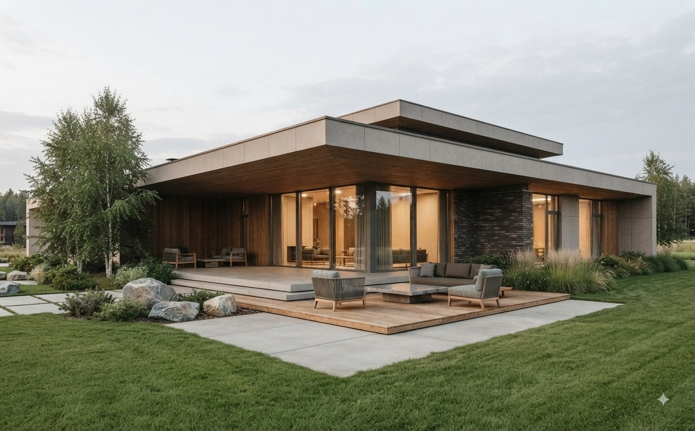
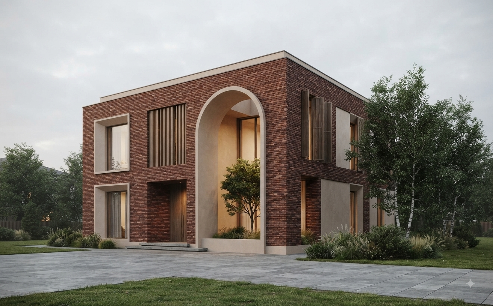
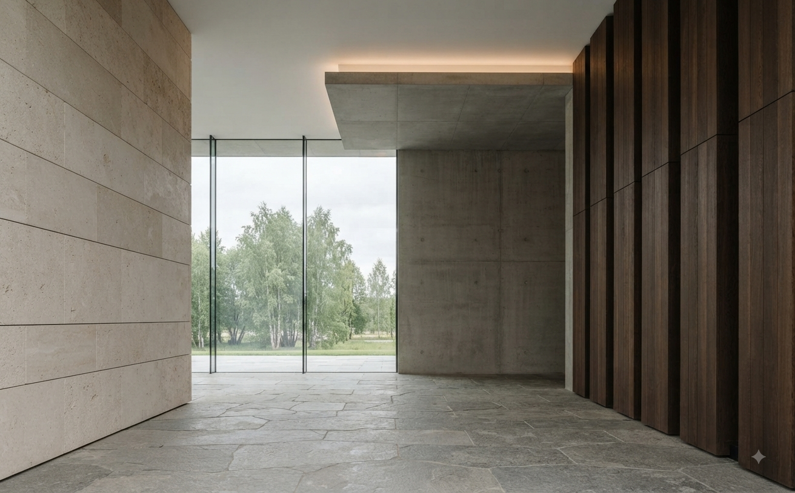
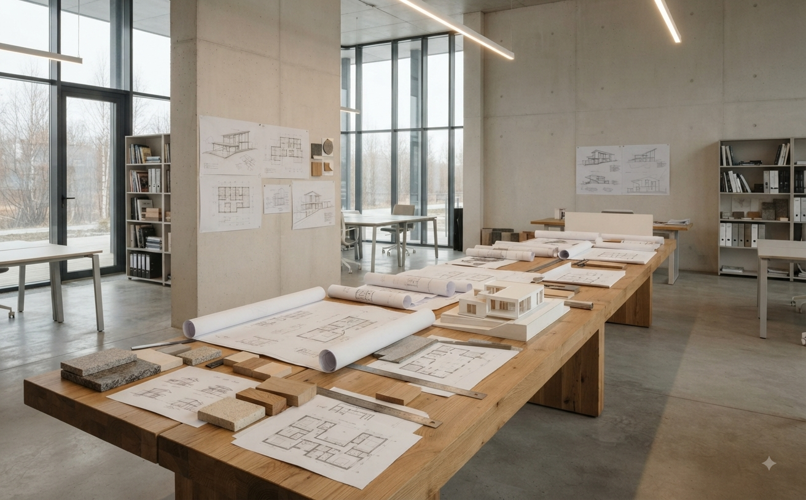

Пространство
начинается
с формы.
Мы создаём архитектуру, в которой материал, свет и пространство работают как единое целое.
Три разных подхода к одному вопросу: каким должно быть пространство, в котором действительно хочется жить.

Villa N
Монолитная архитектура, известняк, бетон и тёмное дерево. Дом выстроен вокруг тишины, света и северного ландшафта.

Внутреннее пространство продолжает архитектуру фасада: камень, бетон, дерево и северный свет.


House M
Низкий горизонтальный объём, собранный из нескольких смещённых архитектурных элементов.

Горизонтальная
тишина.


Residence 04
Компактный объём, построенный вокруг внутреннего двора. Кирпич, штукатурка, дерево и глубокие архитектурные проёмы.
Материал
определяет
ощущение.
Мы не используем материалы как декорацию. Они становятся частью архитектурной логики.


Мы проектируем
не здания.
Мы проектируем среду, в которой архитектура становится частью жизни.
FORMA — вымышленное архитектурное бюро из Сургута, созданное как концептуальный цифровой проект. Здесь нет случайных решений: от масштаба окна до фактуры камня всё подчинено одной пространственной идее.